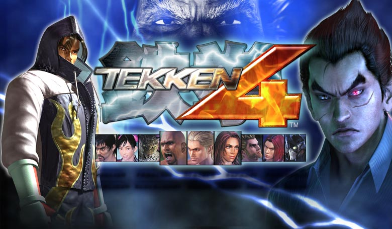

Date: 2001-08-23
Title: Tekken 4
Summary: A darker and more realistic entry that introduced new mechanics like walls, uneven stages, and improved story focus.
Categories: Arcade, Classic
Type: Game Files
File Size: ~1.2 GB
Format: ISO
Region: Japan / USA / Europe
Platform: Arcade / PS2
Tekken 4 introduced a major shift in the series with more realistic environments and a darker tone. It added walls and obstacles to stages, changing how fights played out and requiring new strategies. The game also improved character models and storytelling, focusing on the return of Kazuya Mishima and the continued conflict with Jin Kazama. Despite its experimental changes, it remains a unique and memorable entry in the Tekken series.
Note: Support Original Game By buying Official DVD of Tekken 4 . --Tekken 4 Can be Played By either a real Ps2 or By Ps2 Emulatores via Pc,Download link also include exclusive demo version of the game that can be played. Download